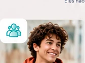
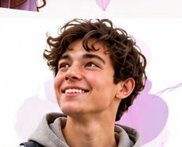
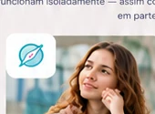
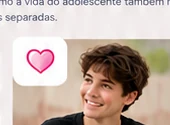
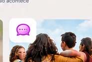
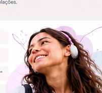
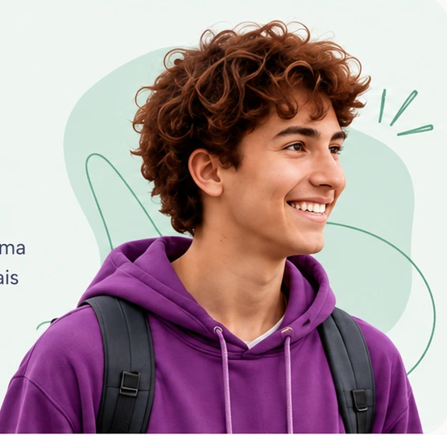
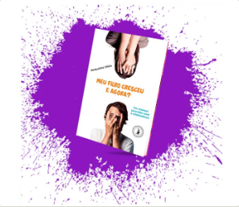
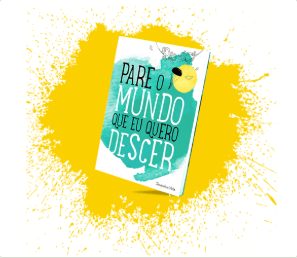

Acolhimento
Um espaço para ser ouvido, reconhecido e compreendido.
Adolescência, projeto de vida, emoções e relações em construção. Um espaço pensado para acompanhar esse período de passagem, com acolhimento, escuta e possibilidades de construção.
O adolescente pode chegar com dúvidas, inquietações, conflitos, sonhos, ou simplesmente com vontade de conversar. Não é necessário ter todas as respostas.
A Travessia parte do princípio de que crescer também é aprender a se conhecer, compreender o que se sente, reconhecer suas relações e começar a escolher os próprios caminhos.
É um espaço pensado para acompanhar esse período de passagem, não para resolvê-lo por ele.

É o que permite ao adolescente chegar como ele é, falar sobre o que vive e perceber que sua experiência merece ser escutada.
“É isso que está acontecendo comigo.”, e, a partir daí, começar a compreender o que está vivendo.
Eles não funcionam isoladamente, assim como a vida do adolescente também não acontece em partes separadas.

Um espaço para ser ouvido, reconhecido e compreendido.

Um espaço para pensar sobre sonhos, interesses, escolhas e futuro.

Reconhecer o que sente e construir recursos para lidar com o que vive.

Conversar sobre família, amizades, escola, pertencimento e vínculos.
Quando falamos de futuro, falamos de emoções. Quando falamos de escolhas, falamos de relações. E, em todos esses lugares, existe a necessidade de ser acolhido.
Não é dizer quem ele deve ser ou qual caminho deve seguir. Por isso, a pergunta não é apenas “o que você quer ser?”, mas:

Porque crescer também é aprender a escolher os próprios caminhos.
Acolher o presente · Compreender quem se é · Imaginar possibilidades · Construir caminhos
Conteúdos e experiências pensados para cada etapa desta jornada.
Conteúdos que fortalecem o autoconhecimento, a autoestima e a construção de escolhas mais conscientes para a vida.
Saiba mais
Formação e recursos para apoiar o desenvolvimento socioemocional de forma prática, ética e baseada em evidências.
Saiba maisLivros para ampliar as reflexões sobre adolescência, relações familiares e a construção da própria história.

Jacqueline Vilela
Uma leitura para famílias que acompanham a passagem da infância para a adolescência.
Comprar o livro ↗
Jacqueline Vilela
Conheça o livro e as informações de aquisição na página da autora.
Conhecer e comprar ↗Uma história sobre escolhas, descobertas e o seu lugar no mundo.
Uma nova publicação ligada ao percurso do Travessias.
EM BREVEA Travessia integra o ecossistema PROTEGE com metodologia e colaboração para o desenvolvimento de adolescentes e famílias.
Um olhar que une educação parental, acolhimento e desenvolvimento humano.
Conheça a Parent ↗